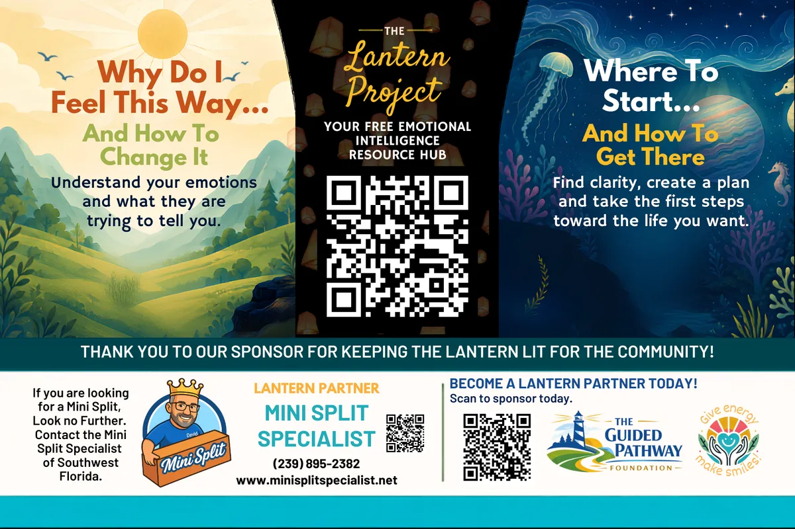
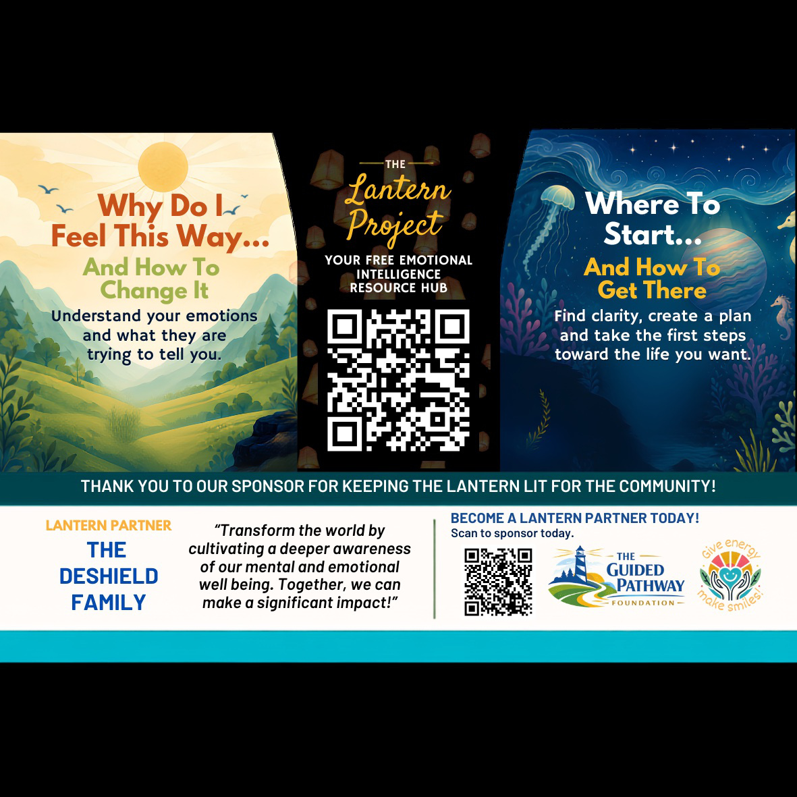
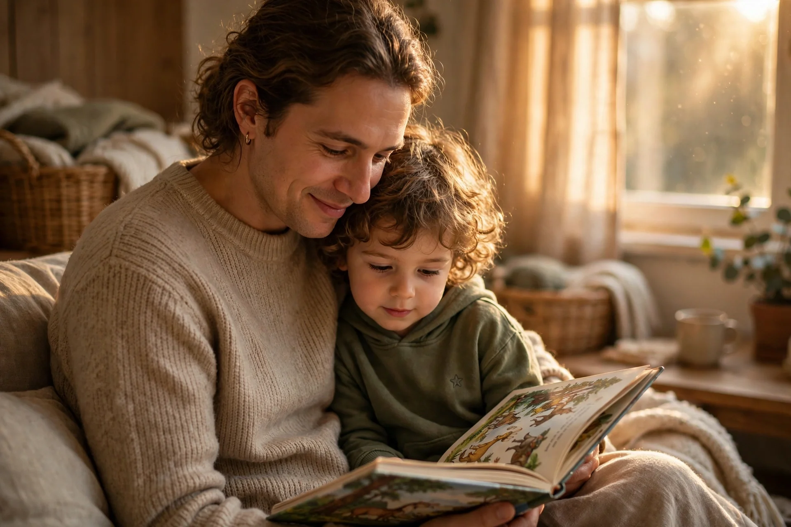

The Lantern Project
A small resource can be the first step toward something bigger. Free emotional intelligence tools for families and communities, available right now.
Emotional Tools Before the Moment Becomes a Crisis
The Lantern Project is a community based emotional wellness initiative of The Guided Pathway Foundation designed to place practical emotional intelligence tools directly into the hands of individuals and families.
Through free resource magnets distributed throughout local communities, individuals can scan a QR code and immediately access guided tools that help them identify what they are feeling, better understand their emotions, develop healthy coping strategies and determine what steps they can take next.
There is no cost to access the resources, no account required and no need to already know what kind of help you are looking for.
Sometimes people do not need another pamphlet telling them where to go. They need help understanding where to begin.
The CDC identifies positive coping skills, strong social connections, stable relationships and supportive environments among the factors associated with positive mental health. The Lantern Project brings that prevention focused approach into the community, wherever people already live, work, learn and gather.

Scan the Magnet. Open the Tools.
Unlike a flyer that may be read once and discarded, a Lantern magnet stays on the fridge or the wall, available until the moment someone needs it.

Step 1: Scan. Point your phone camera at the QR code on any Lantern Project magnet or card. No app and no account are needed.
Step 2: Open. The code opens the free Lantern resource hub, where the full library of guided tools lives.
Step 3: Choose a tool. Each guide walks you through one practical topic step by step, like understanding emotions or knowing where to start.
Community partners, including schools, caregiver organizations, healthcare providers and employers, share these materials with the people they serve, so the tools are already in hand when the moment comes.
Made for Everyone Who Wants a Steadier Inner Life
- Parents and caregivers looking for practical ways to support their children's emotional growth
- Teens and young adults navigating big feelings
- Educators and counselors who want resources ready to use
- Community organizations and employers investing in the wellbeing of the people they serve

Bring The Lantern Project to Your Community
The Lantern Project is made possible through businesses, organizations, donors, sponsors and volunteers who believe emotional wellness resources should be accessible to everyone. Sponsorships fund the magnets and keep every resource completely free for the people receiving them.
If your organization serves families in Southwest Florida, partner with us to bring Lantern materials to the people you reach.
Or start right now: open the free resource hub.